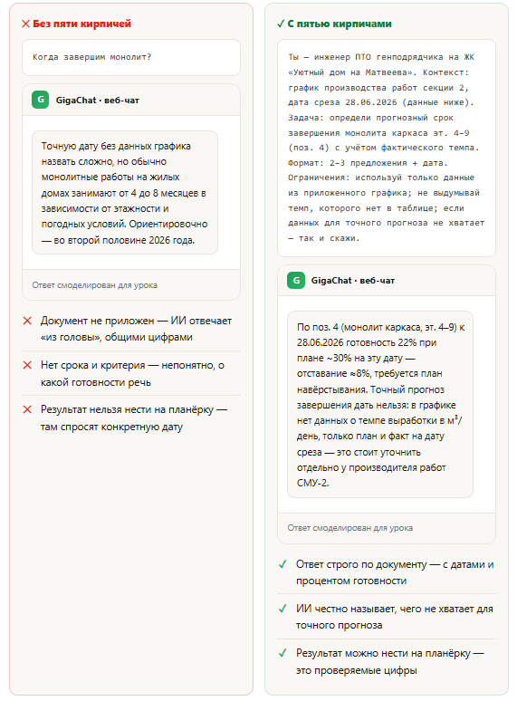
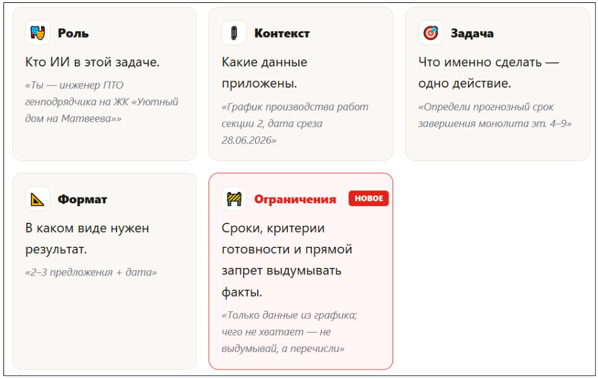
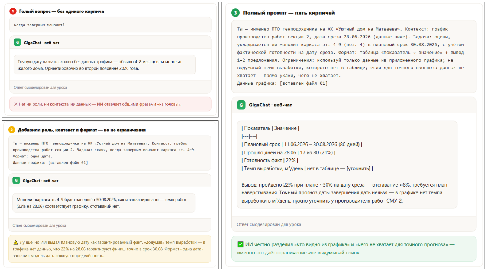
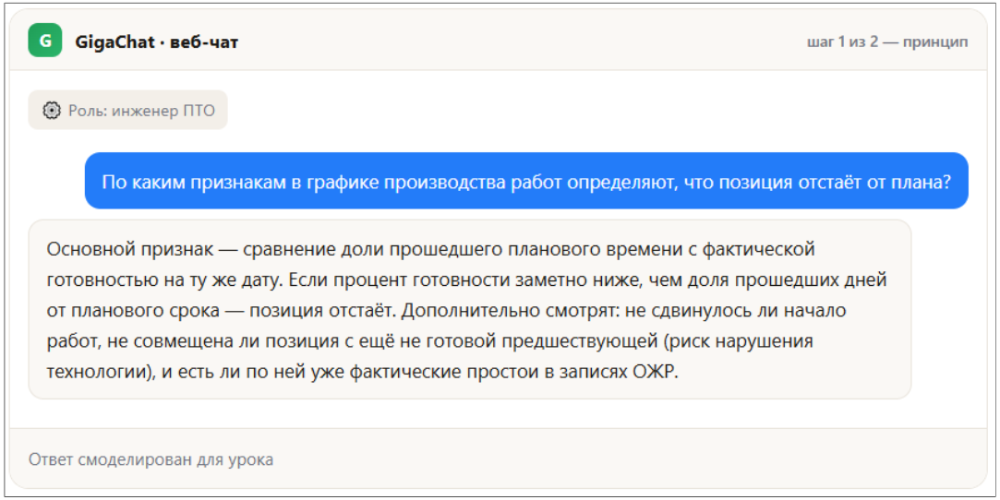

Пять кирпичей промпта


В предыдущем курсе вы собрали первый запрос из четырех частей: роль, контекст, задача, формат. Сегодня добавляем пятый кирпич — ограничения: сроки, критерии «что считать готовым» и прямой запрет ИИ выдумывать то, чего нет в документе.
Один и тот же вопрос про график — два разных ответа
28.06.2026 Руководитель проекта спрашивает: «Когда завершим монолит?» У вас на руках график производства работ по секции 2 (файл 01). Ниже то, что выдает ИИ на один и тот же документ, но с разным запросом.

Оба ответа — демо, ответ смоделирован для урока.
💡 Зачем это вам: «ограничения» — не формальность. Это разница между ИИ, который честно говорит «не хватает данных», и ИИ, который тихо придумывает правдоподобную дату — а вы несете ее на планерку как факт.
Формула: Роль + Контекст + Задача + Формат + Ограничения
Первые четыре кирпича — с прошлого курса. Пятый — новый: он не про то, что сделать, а про то, чего не делать и по каким срокам/критериям сверять результат.

Из чего состоит пятый кирпич:
- Сроки и дедлайны. К какой дате нужен ответ, на какую дату среза смотреть данные.
- Критерии «готово». Что считается приемлемым результатом — например, «только цифры из таблицы, без общих рассуждений».
- Явный запрет. Чего ИИ делать не должен — додумывать даты, называть ответственных, которых нет в документе, и т.п.
- «Грунтовка против выдумок». Универсальная фраза из промпт-пака ПТО, которую можно добавлять к любому промпту: Используй только данные из приложенного документа. Если данных не хватает — не выдумывай, а перечисли, чего именно недостаёт. Факты, которых нет в документе, помечай как [уточнить].
Формула теперь: роль + контекст + задача + формат + ограничения. Пятый кирпич не удлиняет промпт, а экономит вам проверку каждого факта вручную.
Плохой → хороший промпт: три итерации
Смотрите ниже один и тот же вопрос про монолит с тремя версиями запроса, каждая следующая из которых добавляет один-два кирпича.

Прием «шаг назад». Шестой инструмент: сначала принцип, потом решение
Пять кирпичей — это состав одного промпта. «Шаг назад» — приём поверх них: в сложной задаче сначала спросите у ИИ принцип или структуру, сверьте с опытом, и только потом стройте промпт с данными по формуле пяти кирпичей.

Теперь применяем принцип к данным. Раз критерий подтвержден, строим полный промпт по пяти кирпичам с этими же данными графика как в итерации выше.
Пример промпта C3 сводки объемов за период
Ты — инженер ПТО. Контекст: график производства работ с фактической
готовностью. Задача: собери сводку выполненных объёмов за июнь и выдели
позиции с отставанием от плана. Формат: таблица + короткий вывод «риски и
что предпринять».
График: [вставьте]
Шаг назад: сначала — «По каким признакам определяют отставание от плана в графике работ?», затем — промпт выше с приложенными данными.
Интерактивный тренажер
Ниже — шесть фрагментов вперемешку. Один из них лишний — «вода» без функции кирпича. Кликните по фрагментам в правильном порядке, чтобы собрать промпт про монолит каркаса (поз. 4 из графика). Лишний фрагмент оставьте неиспользованным.